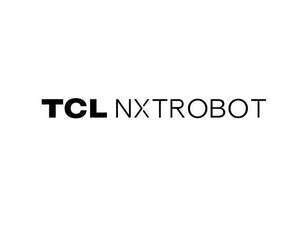

Trade Mark Journal No.2025/030 25 July 2025
UK00004229494 4 July 2025 (7,9,11,28,42)

- Class 7
- Dishwashing machines; Curtain drawing devices, electrically operated; Industrial robots; Washing apparatus; Electric vacuum cleaners and their components; Electric food processors; Laundry washing machines; Dry-cleaning machines; Garbage disposals; Electric food blenders; Electric sweepers; Vacuum cleaners; Electric window cleaning machines; Electric food processors for household purposes; Rechargeable sweepers; Electric kitchen appliances for chopping, mixing, pressing; Dust exhausting installations for cleaning purposes; Robotic cleaning machines; Household cleaning and laundry robots with artificial intelligence; Robots for cleaning.
- Class 9
- Telepresence robots; User-programmable humanoid robots, not configured; Computer chatbot software for simulating conversations; Security surveillance robots; Humanoid robots having communication and learning functions for assisting and entertaining people; Teaching robots; Humanoid robots with artificial intelligence for use in scientific research; Humanoid robots with artificial intelligence for preparing beverages; Humanoid robots with artificial intelligence for use in household cleaning and laundry; Television sets; Downloadable image files; Downloadable software applications for mobile phones; Downloadable computer software applications; Digital voice signal processors; Computers; computer peripherals; Couplers [data processing equipment]; Mobile phones; Network communication equipment; Battery chargers.
- Class 11
- Robotic air purifiers for household purposes; Lighting; Refrigerators; Cooking installations; Dehumidifiers; Air conditioning apparatus; Humidifiers [for household purposes]; Heating installations; Bathroom installations; Electric water purifiers for household purposes; Cooking stoves; Freezers; Radiators, electric; Electric pocket warmers for warming hands; Electric lamps; Ice machines and apparatus; Electric fans; Water filtering apparatus; Air purification apparatus; Heat pumps.
- Class 28
- Toy robots; Smart robot toys; game consoles; Electronic educational game machines for children; Dolls; Board games; Pet toys; swimming pools [play articles]; Controllers for game consoles; Sporting and physical exercise equipment; Educational toys; Radio-controlled toy robots; Smart plush toys; Smart electronic toy vehicles; Handheld computer games.
- Class 42
- Research on robotic process automation technology; Rental of user-programmable humanoid robots, not configured; Artificial intelligence consultancy; Research in the field of artificial intelligence technology; Technological research; Design and development of multimedia products; Maintenance and updating of computer software; Providing search engines for the internet; cloud computing; conversion of data or documents from physical to electronic media; Software as a service [SAAS] services; Computer programming services; Technology consultation in the field of artificial intelligence; consultancy in the design and development of computer hardware; monitoring of computer system operation by remote access; providing virtual computer systems through cloud computing; research and development of new products for others; conversion of computer programs and data, other than physical conversion; computer software design; hosting software platforms for virtual reality-based work collaboration.
TCL Technology Group Corporation
Representative: Trademarkit LLP